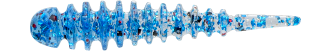
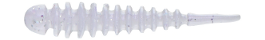
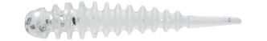
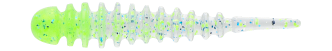

リヴァーチ 1.6インチ
（Riverch 1.6inch）
更新日：2026年11月7日
リヴァーチ 1.6インチ（Riverch 1.6inch）はFISH LABO（フィッシュラボ）のハンドポワードワームです。
基本サイズの2.6インチから、リブとデザインはそのままにサイズダウンした一口サイズのモデルです。連続した深いリブでシルエットを大きく見せられるので、アピール力とフッキング率を兼ね備えています。
連続した深いリブが水をしっかり受けるので、ゆっくり巻いても手元まで抵抗が伝わり、スローに誘ってアジやメバルに食わせられるのが最大の魅力です。

画像出典:FISH LABO公式HP
スペック
- メーカー
- FISH LABO（フィッシュラボ）
- タイプ
- リブ系ワーム（ハンドポワード）
- サイズ
- 1.6インチ
- カラー
- 全20色
- ターゲット
- アジ・メバル
- おすすめのリグ
- ジグヘッド（0.4〜1.5g前後）・キャロ・スプリット・フロートリグ
▼今すぐチェック

リヴァーチの特徴
深いリブと前後硬度別ツートンで、スローに誘えるハンドポワードワーム
-
水をしっかり受ける連続した深リブ
最大の特徴は、ボディに連続して刻まれた深いリブ。水絡みと水受けがよく、ゆっくり巻いても手元まで抵抗感が伝わる。リブが水を受けるのでフォールもゆっくりになり、スローに見せる釣りがしやすい。
-
針持ちと動きを両立した前後硬度別ツートン
ハンドメイドならではの、前後で硬さを変えたツートン構造。ヘッドは針持ちを考えて硬めに、ボディからテールはナチュラルに動くよう柔らかめにしている。
-
吸い込みやすいモチモチの柔らか素材
ハンドポワードのモチモチした柔らかい素材で、魚が吸い込んだ時にしっかり折れ曲がる。ただ巻きでは流れや竿先のわずかな動きでテールが細かく揺れ、アクションを入れるとリブが水を受けてウネッと動く。
リヴァーチの使い方
0.4〜1.5g前後のジグヘッドにセットして、ゆっくりのただ巻きと、リブを生かしたスローフォールで誘うのが基本です。
ただ巻きではテールが細かく揺れ、ロッドで軽くアクションを入れるとボディがウネッと動きます。遠くの群れを狙う時は、キャロやスプリット、フロートリグにも使えます。
リヴァーチの得意な状況
常夜灯まわりの漁港や堤防で、アジやメバルを狙うライトゲームが出番です。
リブが水を受けてゆっくり沈むので、フォールで食ってくるアジや、表層近くでスローな動きに反応するメバルがよく釣れるワームです。
潮の流れが緩い場所でも、リブの抵抗で巻いている感覚がつかみやすく、レンジを保ちやすくなります。
ワンポイント
柔らかいハンドポワードなので、ジグヘッドにはまっすぐ刺して、ヘッドの硬い部分でしっかり止めるとズレにくくなります。食いが渋い時や、当たるのに乗らない時は、細身のスリムやNEOに替えてみましょう。
リヴァーチのサイズの使い分け
| サイズ | 特徴 | 得意な場面 |
|---|---|---|
| 1.0インチ | 一番小さいサイズ | 豆アジ〜小アジ。ヘッドにチョン掛けする使い方も |
| 1.6インチ | 2.6インチのリブとデザインのままサイズダウン | 小さめのアジやメバルを狙う時に |
| NEO 1.7インチ | 極細ボディで吸い込み時に折れ曲がりやすい | 食いの渋い日や、プレッシャーの高い釣り場に |
| スリム 1.7インチ | 深リブとツートンはそのままの一口サイズの細身ボディ | 小さなベイトを食べている時に |
| スリム 2.2インチ | 2.6インチより細身のボディ | 豆アジからギガアジ、メバルまで幅広く |
| 2.6インチ | シリーズの基本サイズ | アジ・メバルを狙う標準サイズ |
| 3.2インチ | 大きめのボディ | デカアジやデカメバル、根魚も狙う時に |
| 4.5インチ | 「アジング界のビッグベイト」 | デカアジに絞って狙う時に |
どのサイズもハンドポワードで、深いリブが共通の特徴です。
人気カラー
リヴァーチ 1.6インチは全20色展開。人気カラーを紹介します。

本気鰯イワシをベイトにしているアジやメバルに合わせやすいリアルなカラー。

UV妖艶クリアUVの効いたクリア系。澄んだ水や明るい常夜灯の下で使いやすい。

グローシラスシラスなど小さなベイトを意識したグロー入りのカラー。暗い場所で目立たせたい時に。

つぶつぶマスカットつぶつぶのラメ入りでアピールの強いカラー。反応を見たい1投目に。
画像出典:FISH LABO公式HP
▼今すぐチェック
リヴァーチに似ているルアー
-
 月下美人 アジングビーム2.0
ダイワ
詳細はこちら＞
月下美人 アジングビーム2.0
ダイワ
詳細はこちら＞
コアにエビ粉を配合した定番のアジングワーム。においも使って食わせたい時に。
-
 ミゾーン2.0
クリアブルー
詳細はこちら＞
ミゾーン2.0
クリアブルー
詳細はこちら＞
浅いリブの微振動で吸い込みのよいピンテール。もっと控えめな動きで見せたい時に。
-
 マギア2.1インチ
エーテル
詳細はこちら＞
マギア2.1インチ
エーテル
詳細はこちら＞
独自の逆リブで強い波動を出すリブ系ワーム。リブの水押しでアピールしたい時に。